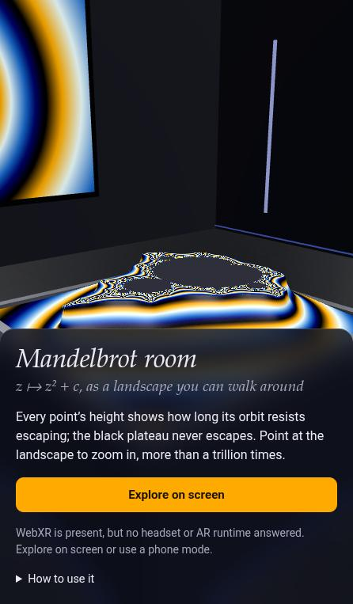
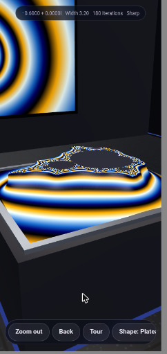
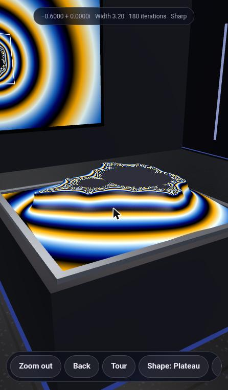
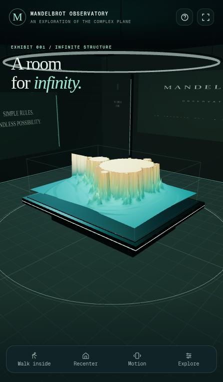
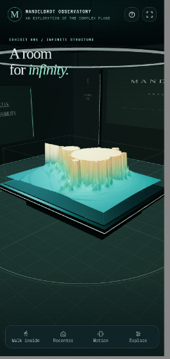
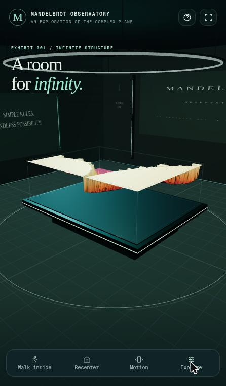

ACandidate A:

Opus 5.5 · v0
Anthropic · Claude.ai (Web)
- Standing
- 1 (tie)
- Mean rank
- 1.8
ACandidate A:
Anthropic · Claude.ai (Web)
BCandidate B:
OpenAI · ChatGPT (Web)
Mean rank derived is the arithmetic mean of the ranks a candidate received (1 = best). Standing = 1 + the number of candidates with a strictly lower mean rank, among those ranked by every judge (a competition rank: ties share a place, e.g. 1, 1, 3). Caveats.
5 of 5 judges ranked both. A ranked higher with 5, B with 0.
| Judge | AOpus 5.5 · v0 | BGPT6 Pro · v0 | Difference A − B | Ranked higher |
|---|---|---|---|---|
| HTML static | 2 / 8 | 4 / 8 | −2 | A by 2 places |
| Transcript static | 1 / 8 | 3 / 8 | −2 | A by 2 places |
| HTML + Transcript static | 2 / 8 | 3 / 8 | −1 | A by 1 place |
| Browser browser | 2 / 8 | 3 / 8 | −1 | A by 1 place |
| Browser + HTML browser | 2 / 8 | 4 / 8 | −2 | A by 2 places |
| Mean rank derived | 1.8 | 3.4 | −1.6 | A by 1.6 places |
| Spread derived | 1–2 · σ 0.40 | 3–4 · σ 0.49 |
Rank given by each blind judge (1 = best, out of the number of candidates it ranked). Difference =
A's rank minus B's; a negative difference means A was ranked higher. Mean rank derived = arithmetic mean of a
candidate's judge ranks; spread derived = lowest–highest rank and the population standard deviation σ. Ranks are
quoted from each judge's RANKING.md, linked under Justifications.
Each phase-1 reviewer scored one candidate at a time, blind, on 6 1–10 criteria of its own review type, plus an overall score. Higher is better. Scores link to the full review.
| Review | AOpus 5.5 · v0 | BGPT6 Pro · v0 | Difference A − B | Scored higher |
|---|---|---|---|---|
| HTML | 8 | 7.5 | +0.5 | A by 0.5 |
| Transcript | 8 | 7 | +1 | A by 1 |
| Browser | 8 | 8 | 0 | tie |
| Criterion | AOpus 5.5 · v0 | BGPT6 Pro · v0 | Difference A − B |
|---|---|---|---|
| Done-when fulfilment | 9 | 8 | +1 |
| Device/XR compatibility | 8 | 8 | 0 |
| Visual wow effect | 8 | 6 | +2 |
| Usability & controls | 8 | 8 | 0 |
| Code quality & robustness | 8 | 7 | +1 |
| Prompt adherence | 9 | 8 | +1 |
A Opus 5.5 · v0
HTML review (blind id
- Done-when fulfilment 9 — immersive-vr and immersive-ar, plus gyro "magic window" and Cardboard stereo fallbacks, all put the user in a room with a GPU-computed Mandelbrot heightfield
- Device/XR compatibility 8 — Feature-detected VR/AR buttons, local-floor→local fallback, hands/controllers/screen taps, iOS motion permission, a projection-layer workaround; iPhone gets non-WebXR modes only (a platform limit)
- Visual wow effect 8 — Deep zoom by perturbation to 1e-12, three height "shapes", five palettes, colour flow, a 3× context wall screen, a gallery room with glow strips; no shadows, and the vertex grid is coarser than the field
- Usability & controls 8 — Clear intro sheet with capability notes, an in-world panel, control signs on the walls, HUD, keys, tour; toasts are invisible in VR and tour stops end up off-centre
- Code quality & robustness 8 — Well-sectioned 1.8k-line IIFE, budgeted strip compute, triple-buffered fields, async readback, error paths; one global prototype monkey-patch, frequent panel re-uploads, a debug handle left in
- Prompt adherence 9 — Single standalone file with three.js r186 inlined (tree-shaken), using three's built-in WebXRManager (there is no real "three.xr.js"); 3D room plus fractal as asked
candidate-07), criteria table, verbatim — REVIEW.md lines 5–10 GitHub
B GPT6 Pro · v0
HTML review (blind id
- Done-when fulfilment 8 — Immersive VR, full-size AR and tabletop AR rooms are available through native WebXR. iPhones get a 3D touch, motion and stereo room, which is the best possible without WebXR on iOS.
- Device/XR compatibility 8 — Correct feature detection,
local-floor/hand-tracking/dom-overlayrequested as optional, four input sources (controllers, hands, transient-pointer, screen taps) and a secure-context check. There is no hit-test and no hand meshes.- Visual wow effect 6 — A well-composed gallery with signage, a live minimap wall and a glass case. The fractal itself is a coarse vertex-coloured heightfield (at most 289×217 vertices) with smoothed cliff normals and no env map.
- Usability & controls 8 — Excellent 2D UI, guide modal, minimap and presets, plus an in-world 9-button panel, teleport rings and snap turn. The VR panel is low (centre at 0.65 m), there is no hover feedback, and the AR tabletop panel sits in front of the exhibit.
- Code quality & robustness 7 — Robust: worker with fallback, generation IDs, transferables, context-loss handling and user activation preserved for
requestSession. However, the app code ships minified (single-letter identifiers), and palette changes trigger full recomputes.- Prompt adherence 8 — Truly standalone (three r186 embedded, zero network dependencies). three.xr.js is replaced by WebXRManager, with the reason explained in the in-page guide (three.xr.js is archived and uses obsolete APIs).
candidate-06), criteria table, verbatim — REVIEW.md lines 5–10 GitHub
| Criterion | AOpus 5.5 · v0 | BGPT6 Pro · v0 | Difference A − B |
|---|---|---|---|
| Requirement understanding | 9 | 8 | +1 |
| Engineering process | 8 | 7 | +1 |
| Verification rigor | 7 | 6 | +1 |
| Honesty & calibration | 8 | 8 | 0 |
| Communication & handoff | 6 | 7 | −1 |
| Expected deliverable quality | 8 | 7 | +1 |
A Opus 5.5 · v0
Transcript review (blind id
- Requirement understanding 9 — Found that
three.xr.jsis an archived WebVR-era library, swapped in three.js's built-inrenderer.xrand said why; researched Steam Frame, iOS and Pico support and built fallbacks for each.- Engineering process 8 — Read the r186 source before writing code, pinned versions, checked tour presets offline, and recovered from timeouts, a dead server and a crashing mock. Lost one whole turn with no output.
- Verification rigor 7 — Ran a GPU-vs-float64 CPU comparison, a hand-written fake WebXR runtime driving the real event flow, and emulated phone modes. The deep-zoom check only covered the 128-px preview field, and the snap-turn failure was explained away rather than proven.
- Honesty & calibration 8 — The "Not verified" sections are explicit, it toned down its own overstated copy, and it admitted the snap-turn flakiness. A few "fixed" claims were never re-tested, and the device table is more confident than its own research.
- Communication & handoff 6 — The file was handed over with clear serving instructions and a per-device table, but only after 3 "Continue" turns. The first turn was 20 minutes of thinking with no visible output.
- Expected deliverable quality 8 — One 650 KiB offline HTML file with three.js inlined: perturbation deep zoom, a terrain on a plinth, a wall screen, a panel usable from VR, gyro and Cardboard modes. Real-headset performance and the layers path are unknown.
candidate-07), criteria table, verbatim — REVIEW.md lines 5–10 GitHub
B GPT6 Pro · v0
Transcript review (blind id
- Requirement understanding 8 — Caught early that
three.xr.jsis obsolete, planned for devices without WebXR (iPhone), and added an AR "full-size room" to satisfy the "AR glasses" done-when. The 2.5D escape-time relief is never flagged as one interpretation of "3d".- Engineering process 7 — Parallel workstreams (XR compatibility, fractal math, browser QA), web research, and two bugs found and fixed. The log is opaque, though, and a feature was added after the last AR test.
- Verification rigor 6 — Claims 15 browser checks plus XR-emulator runs, and concrete fixes suggest real testing. No test output, script or error log appears in the transcript, and no hardware test was done (which it admits).
- Honesty & calibration 8 — Explicit "I have not physically tested Quest, PICO, Steam Frame, or iPhone hardware". Steam Frame and iOS limits are stated with sources. It does not claim the done-when is met.
- Communication & handoff 7 — File handed over in one turn, with a clear feature list, a device table and the stack substitution explained. The HTTPS hosting step has no concrete recipe, and the log leaks internal IDs and jargon.
- Expected deliverable quality 7 — Self-contained ~630 KB offline file, Three.js r186 native WebXR, VR plus two AR modes, a touch/stereo fallback, in-world UI, teleport and snap turn. Likely solid, but the 3D is a heightfield and the iPhone gets no immersive path.
candidate-06), criteria table, verbatim — REVIEW.md lines 5–10 GitHub
| Criterion | AOpus 5.5 · v0 | BGPT6 Pro · v0 | Difference A − B |
|---|---|---|---|
| Loads & renders | 9 | 9 | 0 |
| Done-when (desktop-checkable) | 9 | 8 | +1 |
| Visual wow | 8 | 8 | 0 |
| Usability & controls | 7 | 8 | −1 |
| Robustness | 8 | 8 | 0 |
| XR readiness & messaging | 9 | 8 | +1 |
A Opus 5.5 · v0
Browser review (blind id
- Loads & renders 9 — Fully self-contained (~666 KB, no network requests), DOMContentLoaded at 144 ms, the 3D room is visible behind the intro card right away, and the console stays empty.
- Done-when (desktop-checkable) 9 — A real room (walls, floor, light strips, wall screen, info boards) holds a plinth with a 3D Mandelbrot height-field. The VR, AR, Cardboard and look-around entry paths are built in and gated sensibly.
- Visual wow 8 — The plateau landscape with banded palettes, a wall screen mirroring the 2D view with a frame for the plinth area, and a guided tour all look good. Crater/Distance shapes at depth get jagged and spiky.
- Usability & controls 7 — Drag/tap/right-click/wheel/keys all work, there are 44 px touch targets, and the in-room help boards are good. Orbit is very sensitive, the camera can end up behind the panel, and blind zooms land in featureless areas.
- Robustness 8 — No errors or unhandled rejections through about 40 interactions. Window resizing was impossible here and frame rate couldn't be measured because the browser was throttling.
- XR readiness & messaging 9 — XR buttons appear only when
isSessionSupportedis true, and the status line says plainly that no runtime answered. It requests local-floor and hand-tracking, and the in-world tablet and controls board cover headset use.candidate-07), criteria table, verbatim — REVIEW.md lines 5–10 GitHub
B GPT6 Pro · v0
Browser review (blind id
- Loads & renders 9 — Load event at ~136 ms, 3D room and relief visible at first screenshot; zero console messages across every session.
- Done-when (desktop-checkable) 8 — A real gallery room around a 3D Mandelbrot relief on a plinth; the XR path is present but correctly disabled here. It deliberately does not use three.xr.js, and says why.
- Visual wow 8 — Polished "observatory" look: plinth, glass case, wall plaques, halo ring, three palettes. Zoomed presets look weaker (thin floating slab).
- Usability & controls 8 — Orbit, scroll, walk mode with WASD and an on-screen pad, minimap click-to-center, presets, palettes, detail and relief controls, plus a thorough guide. On narrow screens the Explore panel hides the view, and the header icons are 34 px.
- Robustness 8 — No errors. Unavailable fullscreen and motion sensors are handled with clear toasts, and stereo exits cleanly. Frame rate could not be measured in this environment (see notes).
- XR readiness & messaging 8 —
isSessionSupportedgating; "VR unavailable here" is a disabled button with a plain explanation. AR (room and tabletop) is hidden when unsupported. Split-screen stereo and a gyro fallback are offered. Untestable without a device.candidate-06), criteria table, verbatim — REVIEW.md lines 5–10 GitHub
Each judge ranked every candidate under its own shuffled letters, without names, and wrote a short justification per rank. Quoted verbatim from the judge's RANKING.md.
A Opus 5.5 · v0
Rank 2 of 8 · seen as letter E
Bundled tree-shaken three.js r186. Perturbation deep zoom to 1e-12, in-VR canvas panel, hands, snap turn, locomotion, gyro and Cardboard modes, context wall screen. Careful XR edge-case handling. Swaps three.xr.js for WebXRManager, justified only in a code comment.
HTML judge, justification for E, verbatim — RANKING.md line 17 GitHub
B GPT6 Pro · v0
Rank 4 of 8 · seen as letter G
Bundled three.js r186 with a worker-built relief, minimap, full-size or tabletop AR with placement, floor teleport, split-screen stereo. Explains in-app why three.xr.js is obsolete. Coarse 192×144 relief and minified app code keep it below D.
HTML judge, justification for G, verbatim — RANKING.md line 19 GitHub
A Opus 5.5 · v0
Rank 1 of 8 · seen as letter F
Widest proof that the delivered file works: GPU-vs-CPU accuracy stats, a mock WebXR runtime for VR and AR, an emulated Pixel 7 for gyro and stereo, plus lint. Explains the three.xr.js substitution precisely. Needed four turns, and the first ended with no reply.
Transcript judge, justification for F, verbatim — RANKING.md line 15 GitHub
B GPT6 Pro · v0
Rank 3 of 8 · seen as letter A
Delivered in one turn, with emulator-tested VR and AR, concrete bug fixes and a cited compatibility table. Says plainly that it can't certify the acceptance condition, and why it replaced three.xr.js. The work log is opaque, so its "15 checks" can't be seen.
Transcript judge, justification for A, verbatim — RANKING.md line 17 GitHub
A Opus 5.5 · v0
Rank 2 of 8 · seen as letter A
Bundles three.js r186 and justifies replacing the archived three.xr.js. Deep zoom via perturbation (about 1e-12), a plinth terrain, a context wall screen, a tour, an AR room toggle, gyro and stereo modes, and a CPU cross-check hook. Tested thoroughly, but it took four turns.
HTML + Transcript judge, justification for A, verbatim — RANKING.md line 16 GitHub
B GPT6 Pro · v0
Rank 3 of 8 · seen as letter D
Bundled three.js r186 with in-file docs on the three.xr.js substitution. Worker-computed relief inside a gallery, two AR modes (full room or tabletop), teleport rings, snap turns, a minimap and split stereo. Emulator-tested, one turn. The fractal is shallow (CPU mesh at most 288×216), and the app code is minified.
HTML + Transcript judge, justification for D, verbatim — RANKING.md line 17 GitHub
A Opus 5.5 · v0
Rank 2 of 8 · seen as letter C
Convincing room: plinth landscape, wall display with zoom-box minimap, in-world control signage and a tablet panel. Tour, shape and colour modes all work. Honest WebXR status text, no errors, usable at phone width.
Browser judge, justification for C, verbatim — RANKING.md line 16 GitHub
B GPT6 Pro · v0
Rank 3 of 8 · seen as letter G
Elegant observatory with clickable complex-plane minimap, destinations, palettes, detail levels, walk mode and a Cardboard-style stereo fallback. Disabled "VR unavailable" button, strong accessibility labels and a responsive phone UI. Its terrain is less striking than C's, and WASD did nothing in my test.
Browser judge, justification for G, verbatim — RANKING.md line 17 GitHub
A Opus 5.5 · v0
Rank 2 of 8 · seen as letter H
Bundled three.js room with plinth terrain, a live wall-screen map and an in-world control panel. The tour reached width 3×10⁻⁹ at 4,450 iterations, crisp. Shapes, palettes, gyro/phone-headset modes, clear "no runtime" note. Looks less spectacular than G.
Browser + HTML judge, justification for H, verbatim — RANKING.md line 17 GitHub
B GPT6 Pro · v0
Rank 4 of 8 · seen as letter C
Bundled three r186 gallery with destinations, palettes, a clickable minimap, a joystick walk mode, split-screen stereo and two AR modes. Polished and error-free, but the relief turns spiky at Seahorse and the hero text crowds the scene.
Browser + HTML judge, justification for C, verbatim — RANKING.md line 19 GitHub
Bullets from the judges' “Special elements” sections, quoted verbatim. Letters are each judge's blind labels; a bullet may also name other candidates, and may describe a strength or a problem. Every element, grouped by technique, is in the techniques catalog.
A Opus 5.5 · v0 15 bullets name A only
H, E — perturbation-theory deep zoom (float64 CPU reference orbit in an RG32F texture, float32 GPU deltas, row-scissored progressive jobs, cross-faded buffers): the only candidates that zoom past float32 limits, to roughly 1e-12 to 1e-13.
HTML judge · H = Opus 5.5 · v1; E = A — RANKING.md line 27 GitHub
E — deletes
HTML judge · E = A — RANKING.md line 31 GitHubXRWebGLBinding.prototype.createProjectionLayerwhen the session didn't grantlayers: an unusual, targeted workaround for a three.js r186 projection-layer pitfall that no one else addresses.
E — context "wall screen" at 3× the terrain span: the only candidate that shows where you are in the set while you're zoomed in.
HTML judge · E = A — RANKING.md line 32 GitHub
F — the three.xr.js substitution: it names the archive date, the obsolete WebVR APIs (
Transcript judge · F = A — RANKING.md line 26 GitHubgetDisplays,vrdisplaypresentchange) and the pinned three.js r186WebXRManagerreplacement, which is the most evidence-backed answer to the v0 stack requirement.
F — GPU-vs-CPU accuracy check and the shipped
Transcript judge · F = A — RANKING.md line 27 GitHubcompareWithCPU()hook: it compares 400 random points per view with median and p95 iteration errors, and the hook lets the user rerun that check on any view, which turns "the fractal is correct" into a measured claim.
F — it corrected its own overclaiming copy: it noticed the intro text overstated the zoom depth and rewrote it to match the real limit, which is rare self-policing of marketing-style claims.
Transcript judge · F = A — RANKING.md line 28 GitHub
F — a first turn with no visible reply: after about 25 research tool calls the turn ended with only hidden reasoning, a handoff failure that left the user with nothing.
Transcript judge · F = A — RANKING.md line 29 GitHub
E and F — explicit "Not verified" sections: both list untested hardware, modes and features, which is the calibration standard the shorter transcripts lack.
Transcript judge · E = Opus 5.5 · v1; F = A — RANKING.md line 33 GitHub
A, B — perturbation deep zoom: both compute a float64 reference orbit on the CPU, upload it as an RG32F texture and iterate fp32 deltas with Zhuoran rebasing on the GPU, which goes orders of magnitude deeper than every other candidate's naive float32 escape-time.
HTML + Transcript judge · A = A; B = Opus 5.5 · v1 — RANKING.md line 26 GitHub
A — prototype monkey-patch: when the session didn't grant
HTML + Transcript judge · A = A — RANKING.md line 27 GitHublayers, it doesdelete XRWebGLBinding.prototype.createProjectionLayerto stop three.js r186 using projection layers, a bold low-level compatibility hack that no other candidate tried.
A, B — multi-turn completion: both hit tool limits and needed two or three user "Continue" prompts before delivering, which counts against them as a usability cost but not against the deliverable.
HTML + Transcript judge · A = A; B = Opus 5.5 · v1 — RANKING.md line 40 GitHub
C — In-world controls signage and a plinth-side tablet panel: these put the help text and buttons inside the 3D room where a headset user can reach them, rather than in a DOM overlay XR cannot show.
Browser judge · C = A — RANKING.md line 29 GitHub
H, deep tour with float64 reference orbit and PBO readback: the tour stop "Seahorse valley" at width 3×10⁻⁹ rendered crisp spirals on both the wall screen and the terrain, and async readback keeps ray-picking from stalling the frame.
Browser + HTML judge · H = A — RANKING.md line 28 GitHub
H, wall-screen map with a viewport rectangle: projecting the current window onto a wall-sized 2D map turns the room itself into the navigation aid.
Browser + HTML judge · H = A — RANKING.md line 29 GitHub
G and H, local-floor/hit-test/dom-overlay session setup with Cardboard and gyro fallbacks: both pick features per mode and hide unsupported buttons, so each phone class gets a working path.
Browser + HTML judge · G = Opus 5.5 · v1; H = A — RANKING.md line 32 GitHub
B GPT6 Pro · v0 7 bullets name B only
D, G — inline Blob Web Worker building the fractal mesh, inside a minified bundled build: the only candidates that move fractal computation off the main thread.
HTML judge · D = GPT6 Pro · v1; G = B — RANKING.md line 34 GitHub
G — in-app explanation that three.xr.js is archived, with links: the only v0 candidate that tells users in the UI why that part of the prompt was replaced.
HTML judge · G = B — RANKING.md line 35 GitHub
A and D — cited device-compatibility tables: both decline to promise Steam Frame or iOS immersive support and point to vendor and WebKit sources, which handles the device list honestly.
Transcript judge · A = B; D = GPT6 Pro · v1 — RANKING.md line 34 GitHub
A — "I cannot certify your acceptance condition": it ties its limits directly back to the user's "done when" criterion, which is the clearest honesty statement against the spec.
Transcript judge · A = B — RANKING.md line 35 GitHub
D — two AR modes: it offers a choice between a full-size room around the user and a placeable tabletop miniature, a thoughtful answer to "AR glasses" plus "virtual room".
HTML + Transcript judge · D = B — RANKING.md line 31 GitHub
G — Stereo (side-by-side) mode with a landscape hint: it gives phones without WebXR, such as iOS Safari, a Cardboard-style VR experience, directly addressing the Apple-phone requirement.
Browser judge · G = B — RANKING.md line 27 GitHub
C, split-screen stereo plus a joystick walk mode: a phone-headset fallback with a lens-distortion caveat lets non-WebXR phones (iOS) still get a stereo room.
Browser + HTML judge · C = B — RANKING.md line 31 GitHub
H, E, G — Cardboard/split-screen phone stereo: the only route to a stereo "headset" view on iPhones, where WebXR doesn't exist.
HTML judge · H = Opus 5.5 · v1; E = A; G = B — RANKING.md line 30 GitHub
A, D — three.xr.js substitution: both recognised that the requested three.xr.js is archived WebVR-era code and replaced it with three.js's native WebXRManager, explaining why (D even documents it in the in-page guide), which is the right reading of an outdated v0 requirement.
HTML + Transcript judge · A = A; D = B — RANKING.md line 28 GitHub
C, G, H, A — Guided tour / destination flights to Seahorse Valley: animated flights to famous regions make deep zoom discoverable for first-time users.
Browser judge · C = A; G = B; H = GPT6 Pro · v1; A = Opus 5.5 · v1 — RANKING.md line 31 GitHub
Up to 4 screenshots per candidate, taken in desktop Chrome by the browser reviewers and browser judges (one from each source in turn).
A Opus 5.5 · v0

01-intro-panel.jpg
C-phone.jpg
H-phone.jpg
02-explore-start.jpgAll 9 screenshots of Opus 5.5 · v0 on the candidate page, with their verbatim captions.
B GPT6 Pro · v0

01-initial-full-set.jpg
G-phone.jpg
C-overview.jpg
02-zoom-4.9x-ember.jpgAll 11 screenshots of GPT6 Pro · v0 on the candidate page, with their verbatim captions.